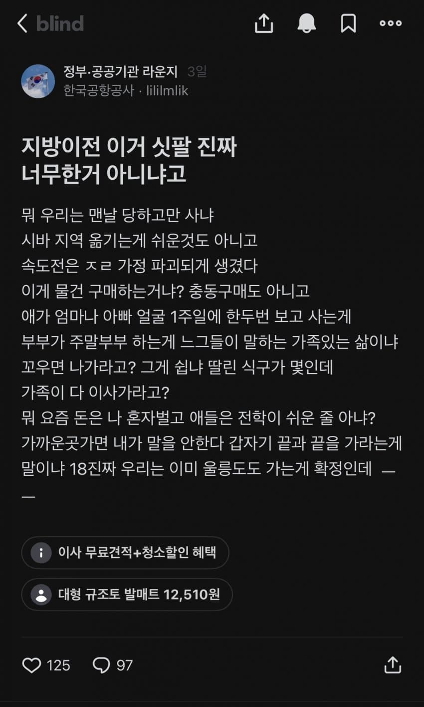
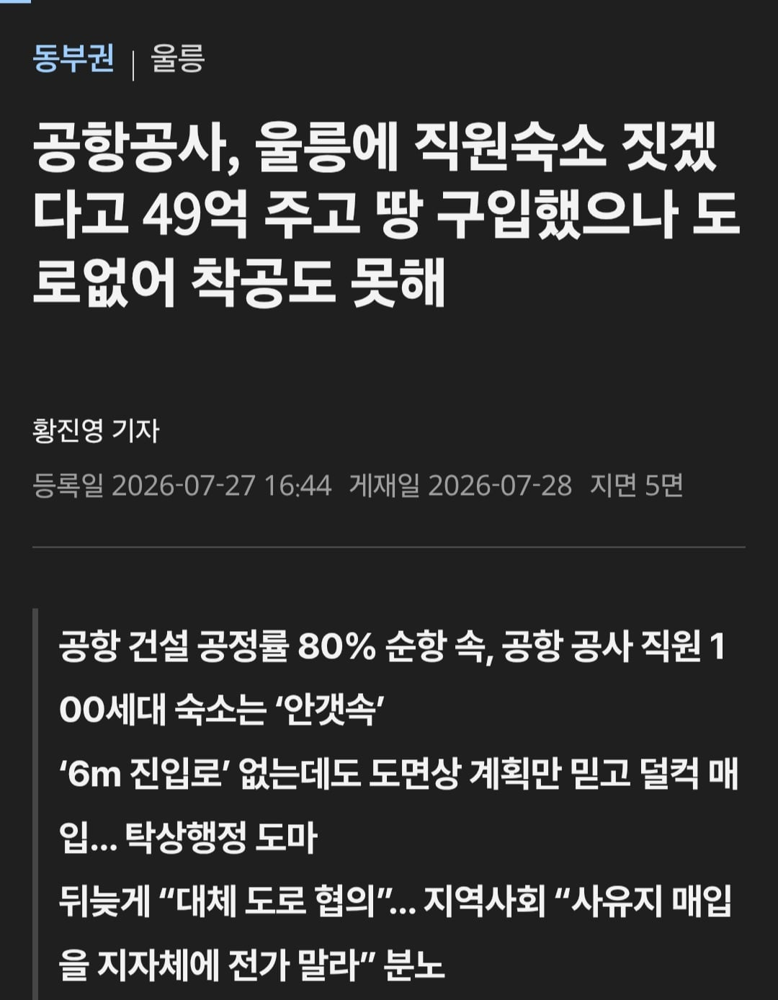

0 · 1 · · 원문


https://www.kbmaeil.com/article/20260727500582
울릉도
수집 당시 댓글 1개
초CYON · 2 일 전
공항공사 직원은 인정해줘야한다... 다른 공기업은 뭐 깡촌가네뭐네 해도 기업별로 권역설정 다 해서 최대한 그 안에서 굴림... 근데 공항공사는 그딴거 없어 걍 노빠꾸 '공항' 기준 전국 순환임 아새끼 어제는 제주도 있더만 지금은 왜 또 양양에 있나 그래? 이지랄 날 수도 있다는거임 그와중에 승진하려면 의무적으로 서울행해야됨 김포사업소던 본사던 근무해야되서 돈도 없는데 뭐ㅋㅋ
댓글
수집 당시 댓글 1개
초CYON · 2 일 전
공항공사 직원은 인정해줘야한다... 다른 공기업은 뭐 깡촌가네뭐네 해도 기업별로 권역설정 다 해서 최대한 그 안에서 굴림... 근데 공항공사는 그딴거 없어 걍 노빠꾸 '공항' 기준 전국 순환임 아새끼 어제는 제주도 있더만 지금은 왜 또 양양에 있나 그래? 이지랄 날 수도 있다는거임 그와중에 승진하려면 의무적으로 서울행해야됨 김포사업소던 본사던 근무해야되서 돈도 없는데 뭐ㅋㅋ